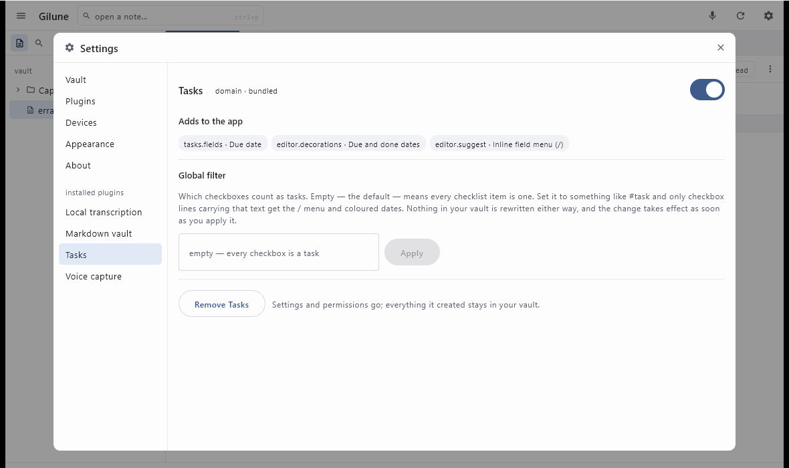

Plugins
Almost everything in Gilune beyond writing a note is a plugin — including transcription and tasks. That means you can see exactly what each one does, and take it away if you do not want it.
Finding them
Open Settings from the top bar and choose Plugins. You get a list of what is installed, each with a switch. Clicking a row — or picking its name from the list down the left — opens that plugin's own screen.

A plugin's screen tells you four things:
- Permissions — what it is allowed to do, each one shown as allowed or not allowed, with a button to change your mind either way.
- Events — what it listens for and what it announces. This is how you can tell that transcription reacts to new recordings, for example.
- Adds to the app — the buttons, panels and menu entries it contributes. If you have ever wondered where something in the interface came from, this is where it says so.
- Its own settings, if it has any — the spoken language for transcription, the global filter and agenda switch for tasks.
Some plugins are marked required and have no switch. Those are the parts Gilune cannot sensibly be without — writing your notes into your vault as files, for one.
Permissions
Nothing reaches outside your machine without your say-so. If a plugin wants to use the network, it has to be allowed by name, by you, before it can. It does not ask once and keep the answer forever, and it cannot borrow another plugin's permission.
The clearest example is transcription. It needs a speech model of about 75 MiB, and on a fresh install it simply will not fetch it: the status bar tells you it is waiting for permission, and the plugin's row in the list says it needs reviewing. Go to its screen, press Allow next to the network permission, and the download happens — once. Everything after that is offline.
You can press Revoke at any time. Nothing re-grants itself: not on an update, not on a reinstall, not after you removed the plugin and put it back. If it needs the permission again, it has to ask you again.
Switching one off
Flip its switch and the plugin stops. Its buttons, panels and menu entries disappear from the app — turn off transcription and the microphone buttons are simply not drawn, because nothing would be listening.
Work that was queued up for it is parked, not thrown away. Turn it back on and it picks up where it left off. It will not, however, go back and process everything that happened while it was off — for that, use Catch up missed captures at the bottom of the plugins list, which works through recordings made before a plugin was there or while it was switched off.
Removing one
On a plugin's screen, at the bottom, is a Remove button. Removing a plugin takes away its settings and its permissions.
It does not touch your notes. Everything the plugin ever wrote into your vault stays exactly where it is. Remove transcription and your voice notes keep their words and their audio. Remove tasks and your checkboxes are still checkboxes — the dates already in your notes are just text, and they sit there unchanged until you decide otherwise.
This is the whole point of keeping everything in plain files. A plugin can add something to your vault, but it never owns it, and it cannot take it away on its way out.
What you cannot do yet
Gilune currently runs only the plugins that ship with it. Being able to find, download and install plugins written by other people is planned — and the permission system on this page is the groundwork for it — but it is not built yet, so there is nothing to install today.